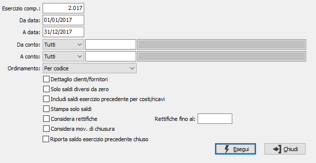

Stampa situazione contabile

ESERCIZIO COMPETENZA: inserire l'esercizio contabile di competenza. Viene proposto l'esercizio corrente.
DA DATA: indicare la data da cui si desidera iniziare la stampa dei movimenti. Il campo è obbligatorio.
A DATA: indicare la data cui si desidera terminare la stampa. Il campo è obbligatorio.
DA CONTO: tipo e codice del sottoconto da cui si desidera iniziare la stampa. Confermando a vuoto con tipologia Tutti, la selezione inizia con il primo sottoconto valido. Sul campo è attivo lo zoom F9.
A CONTO: tipo e codice del sottoconto con cui si desidera concludere la stampa. Confermando a vuoto con tipologia Tutti, la selezione termina con l’ultimo sottoconto valido. Sul campo è attivo lo zoom F9.
ORDINAMENTO: definisce il criterio di ordinamento della stampa: per codice o per ragione sociale.
DETTAGLIO CLIENTI/FORNITORI: check box per abilitare la stampa del dettaglio dei singoli clienti/fornitori (casella con segno di spunta).
SOLO SALDI DIVERSI DA ZERO: definisce se stampare solo i conti che hanno saldo diverso da zero (casella con segno di spunta) o tutti i conti (casella vuota).
INCLUDI SALDI ESERCIZIO PRECEDENTE PER COSTI/RICAVI: consente di includere nella stampa i saldi relativi ai soli costi e ricavi dell'esercizio precedente (casella con segno di spunta).
STAMPA SOLO SALDI: riporta in stampa solo i saldi (casella con segno di spunta) e non i valori di dare ed avere (casella vuota).
CONSIDERA RETTIFICHE: check box per definire il criterio di trattamento delle scritture di rettifica relative all’esercizio precedente ma registrate con data dell’esercizio in corso. Valori possibili:
vuoto = non vengono considerati i movimenti relativi alle scritture di rettifica dell'esercizio al quale si riferisce il primo limite di data;
spunta = vengono considerati i movimenti relativi alle scritture di rettifica dell'esercizio al quale si riferisce il primo limite di data, solo se il secondo limite di data coincide con la data di fine esercizio.
FINO AL: eventuale data per indicare il limite massimo di data entro il quale considerare le scritture di rettifica.
CONSIDERA MOVIMENTI DI CHIUSURA: check box per definire i criteri di trattamento dei movimenti di chiusura effettuati con l’apposita causale, al fine di ottenere una situazione significativa anche dopo le chiusure. Ha senso in caso di ristampa situazioni di esercizi precedenti già chiusi. Valori possibili:
vuoto = non vengono considerati i movimenti di chiusura relativi all'esercizio al quale si riferisce il primo limite di data;
spunta = vengono considerati i movimenti di chiusura relativi all'esercizio al quale si riferisce il primo limite di data.
RIPORTA SALDO ESERCIZIO PRECEDENTE CHIUSO: il campo è attivo solo se l'esercizio precedente a quello richiesto in stampa è chiuso e consente di riportare i saldi nella stampa (casella con segno di spunta).